前言
Anthos 是為混合式雲端和多雲端環境提供一致的開發和作業體驗，故需要體現強大的包容性，將多個GKE、亦或是其它雲的Kubernetes一併整合進單一平台 eg. 如下圖所示。有興趣的朋友可以領聽此Google 混合雲的CloudOnboard活動[5]，有細說完整Anthos功能 。因此本實驗將帶來模擬外部Kubernetes，透過GKE-Hub與GKE-Connect，把原本與GCP沒關系的K8s統合為一。
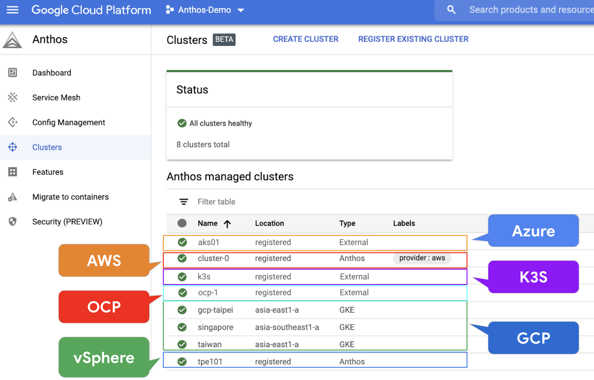
步驟：
- 準備外部Kubernetes
- 針對 GCP, Kubernetes 各別生成 Service Account
- Kubernetes與Anthos整合
▌1. 準備一套Kubernetes: kind
- 本次使用的K8s cluter採用kind[1] 技術
- kind 透過運行多個container 構成control plane以及workers，但它們實際上都是container 在運行
前置需求
在部署kind之前，需要安裝好docker runtime, kubectl，以及Google sdk以利取得service account，與註冊等需求
- docker runtime for Centos7
- kubectl[2]
- gcloud command sdk[3]:
$gcloud auth login,$gcloud init
step1. Google OAuth for gcloud auth login
打通 Google OAuth，直接使用vm shell完成本次驗驗
- 執行
gcloud auth login之後，系統會啟用browser進行OAuth認證，需點選產生出來的虛擬網頁 - 再選擇要登入的account，隨後會產生一組
Verification code - 最後請將這組code回填至你的shell完成gcloud auth login授權
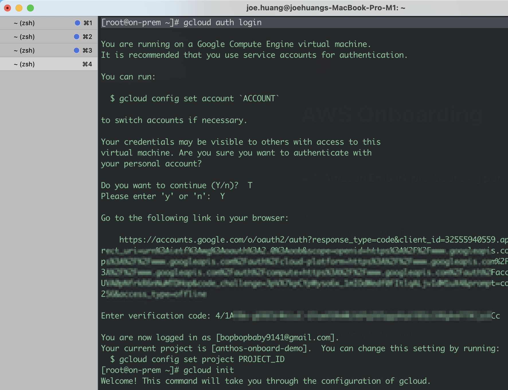
step2. CentOS install kind
- 下載kind package，授於執行權
- 並將目錄移動至 /usr/bin/kind，以利後續執行kind時可以直接在shell上使用
1 | #1 install kind |
2 | curl -Lo ./kind "https://kind.sigs.k8s.io/dl/v0.9.0/kind-$(uname)-amd64" |
3 | chmod +x ./kind |
4 | sudo mv ./kind /usr/bin/kind |
5 | |
6 | #2 test kind |
7 | kind |
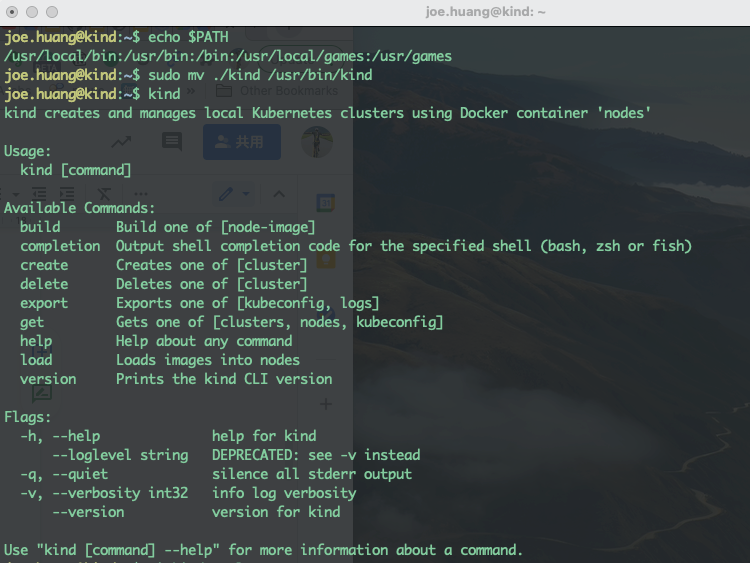
step3. 準備cluster設定檔: kind.yaml
- kind.yaml 此設定檔，是要定義有多少個control-plane，與多少個worker node
- 以及kubernetes API server使用的API 版本
1 | #1 edit yaml file |
2 | vi kind.yaml |
3 | |
4 | #2 |
5 | kind: Cluster |
6 | apiVersion: kind.x-k8s.io/v1alpha4 |
7 | nodes: |
8 | - role: control-plane |
9 | - role: worker |
10 | - role: worker |
11 | - role: worker |
12 | |
13 | #3 create cluster by kind |
14 | kind create cluster --config kind.yaml |
15 | |
16 | #4 build up context for k8s |
17 | kubectl cluster-info --context kind-kind |
18 | |
19 | #5 |
20 | sudo kind get clusters |
安裝過程需7~8分鐘
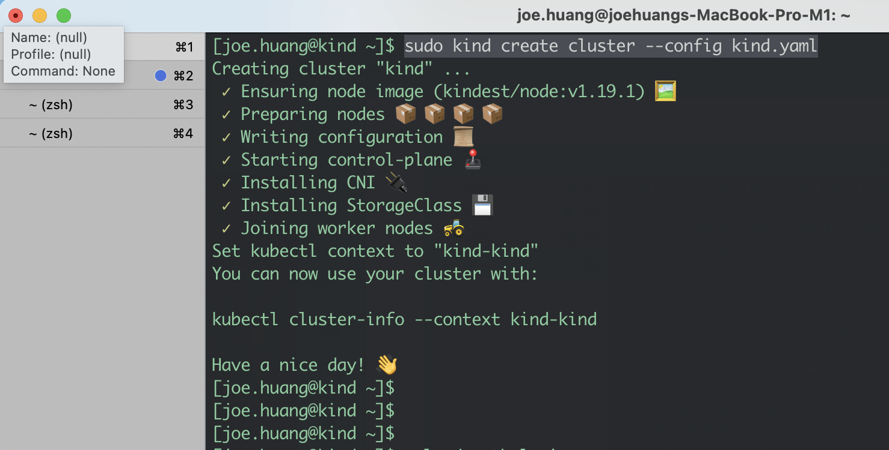
Verify kind(K8s)
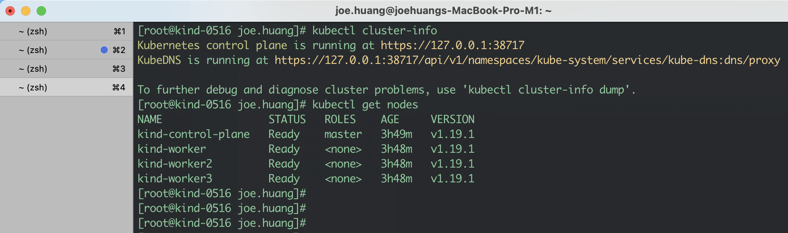
step3. 驗證K8s
透過以下指令，鑑別K8s是否運行正常
- 從內部K8s control: kubectl cluster-info, kubectl get nodes
- 從外部container: docker ps
1 | |
2 | #1 cluster-info shows control-plane status |
3 | kubectl cluster-info |
4 | |
5 | #2 worker nodes |
6 | kubectl get nodes |
7 | |
8 | #3 shows currenly running dokcer for kind cluster |
9 | docker ps |
執行$kubectl cluster-info, $kubectl get nodes
- 得到目前運行的kubernetes control plane(master node)
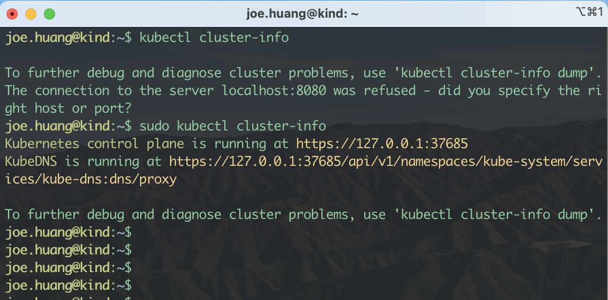
執行$docker ps，看到4個container 運行
- master node x1
- worker node x3
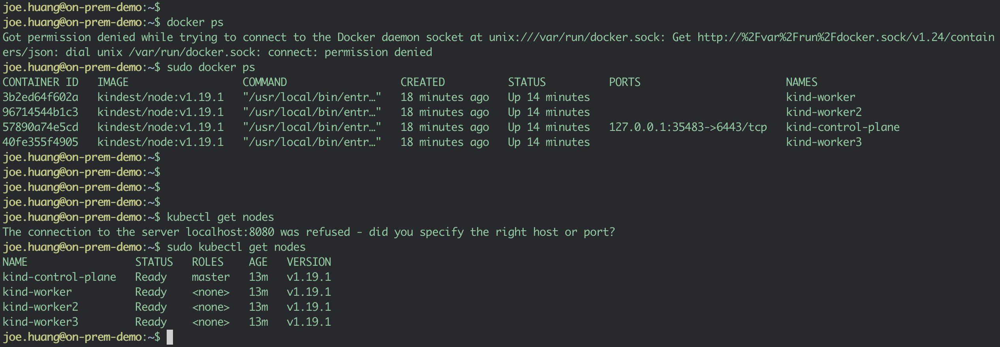
▌2. 針對 GCP, Kubernetes 各別生成 Service Account
上述的過程完成後，是為了K8s平台的準備。接下是讓Anthos串接到即有的K8s，二邊不同環境上的控制權整合，我們就需要透過service account來達成。而Key分別為Google key和Kubernetes，我們姑且稱為GSA, KSA吧
step1. 針對gke-connect 啟用一把service account (SA)
- 這邊取SA的目的是為要能控制GCP上面的服務
- 此步驟的service account，是在GCP 運行的，因此簡稱為GSA
- 這把GSA，要綁的角色是
roles/gkehub.connect
1 | #1 Prepare SA for gke-connect |
2 | SA=gke-connect |
3 | GOOGLE_CLOUD_PROJECT=$(gcloud config get-value core/project 2>/dev/null) |
4 | |
5 | gcloud iam service-accounts create ${SA} |
6 | |
7 | #2 binding ROLE to specific account |
8 | gcloud projects add-iam-policy-binding ${GOOGLE_CLOUD_PROJECT} \ |
9 | --member="serviceAccount:${SA}@${GOOGLE_CLOUD_PROJECT}.iam.gserviceaccount.com" \ |
10 | --role="roles/gkehub.connect" |
確認#1, #2步驟結果產生名為gke-connect帳戶
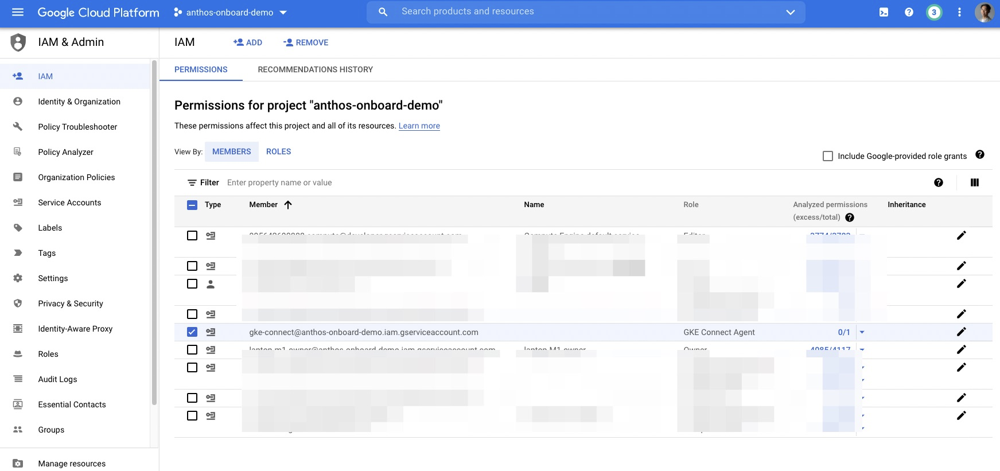
step2. 把GSA 下載至本機為.json
- 這把key用意，是為了可以呼叫Anthos gke-connect API，運行後使其可以在K8s 安裝
gke-connent agnet，有了
1 | #1 把GSA 下載至本機為.json |
2 | gcloud iam service-accounts keys create gke-connect.json \ |
3 | --iam-account=${SA}@${GOOGLE_CLOUD_PROJECT}.iam.gserviceaccount.com \ |
4 | --project=${GOOGLE_CLOUD_PROJECT} |
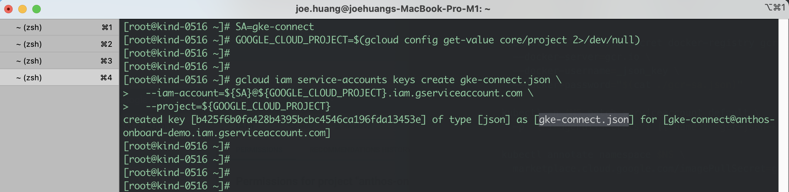
接下來的步驟，是為生成 Service Account for Kubernetes，因此會需要使用$kubectl create sa 指令來完成
step3. 生成 Service Account for kubernetes (KSA)
- 建立一個service account(sa)，名為gke-admin
- 透過綁定的動作
$kubectl clusterrolebinding，將gke-admin 綁給cluster-admin這個最大的k8s role 權限 - 擷取service account內容，輸出yaml格式，再透過bases64 -d解碼，最終取得TOKEN
1 | #1 create SA & clusterrolebinding |
2 | kubectl create sa gke-admin |
3 | |
4 | kubectl create clusterrolebinding gke-admin \ |
5 | --clusterrole=cluster-admin \ |
6 | --serviceaccount=default:gke-admin |
執行畫面: clusterrolebinding.rbac.authorization.k8s.io/gke-admin created
顯示綁定關系已建立
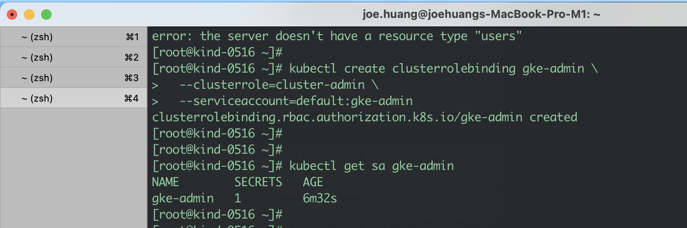
step4. 復制TOKEN
1 | #1 Generate TOKEN code |
2 | SECRET_NAME=$(kubectl get sa gke-admin -oyaml | grep token | awk '{print $3}') |
3 | |
4 | kubectl get secret $SECRET_NAME -ojsonpath='{.data.token}' | base64 -d |
執行#2 畫面
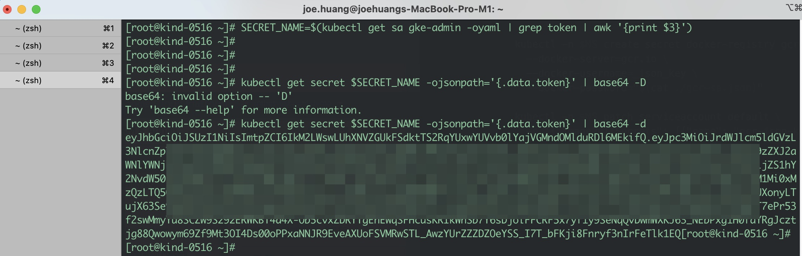
💡$base64 -d, -D 參數問題
可能會因不同OS版與base package差異而有所不同
▌3. Kubernetes與Anthos整合
上述大步驟是圖中 On-prem Data Center準備，我們用kind做一個模擬，接下來要建立紅框內的連線
- 透過gke-connect.json google service(GSA)，shell的操控可以跟外部api endpoint溝通，幫我們安裝agnet，並且實行註冊的行為
- 另外，你可能會好奇為什麼Anthos，知道我K8s的內容呢，那是因為有context資訊供
$gcloud hub memberships register - 詳細kubeconfig與context的關系可以參考[4]說明
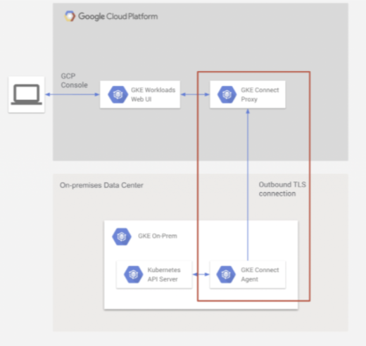
step1. 註冊至Anthos
gcloud hub memberships register 將會註冊至Anthos，而GKE Console 會顯示一個新的K8s，其中參考
--context=kind-kind：是.kube/config中名為kind-kind cluster--kubeconfig=$HOME/.kube/config: 是告知我的kubeconfig檔在那兒，讓程式去識別正確的cluster--service-account-key-file=gke-connect.json：告知我本機要溝通Anthos API時使用的key
1 | gcloud container hub memberships register on-prem \ |
2 | --context=kind-kind \ |
3 | --kubeconfig=$HOME/.kube/config \ |
4 | --service-account-key-file=gke-connect.json |
執行僅3~5秒就完成
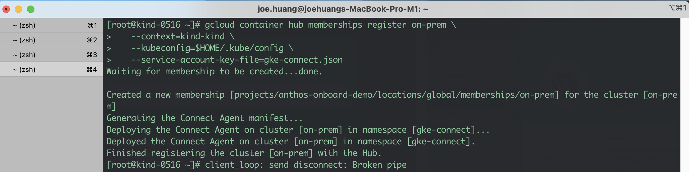
step2. GKE Console 顯示新的K8s
- 然後請至GKE Console
- 新的K8s 名為on-prem，也就是我們剛剛register的名字on-prem
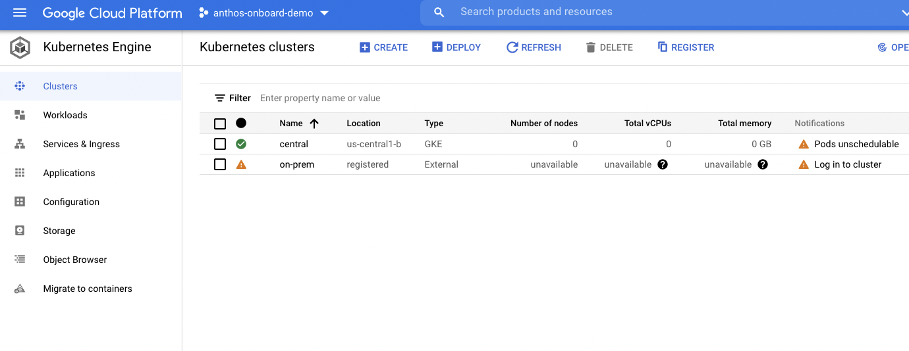
step3. 輸入TOKEN
- 上面步驟產出的token，並貼入GKE Login
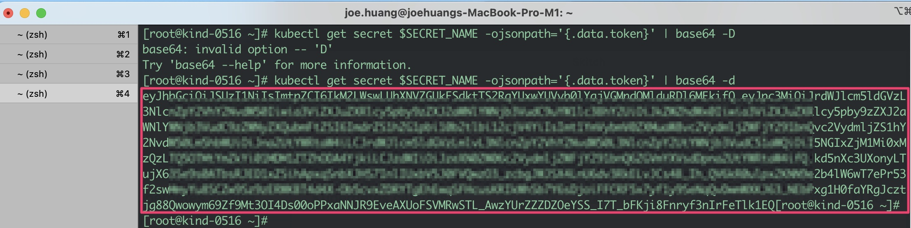
GKE Console: Log in to cluster畫面位置
- 將以上執行指令最後顯示的 Token 複製於 Cloud Console GKE 頁面登入註冊的 Cluster。
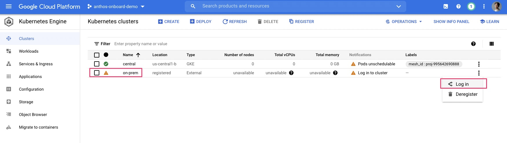
貼入TOKEN
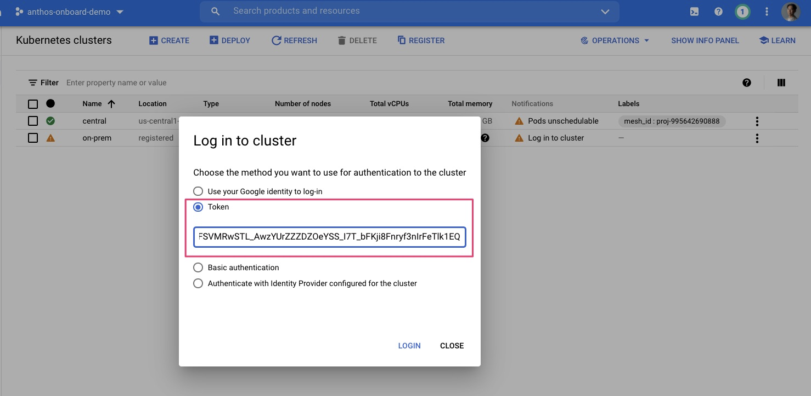
step4. 成功註冊on-prem
- GKE console可以看到綠字的勾，代表你可以用統一介面來管理Attached K8s
- 當然你可以，透過Console 的workload, service等功能，來達到多雲混合統一管理的環境
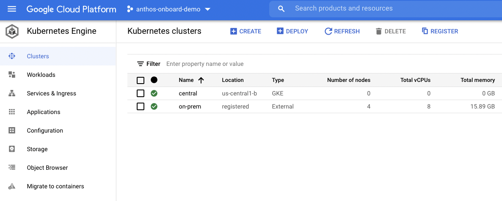
結論
在本次的實作，大家都可能很清楚Anthos是透過GKE-Hub, GKE-Connect，讓彼此不相干的環境K8s介接在一起，Anthos 不僅可以管理自已的GKE, 也包含AWS, Azure, OpenShift等外部的K8s，如同我們的實驗kind 外部的cluster，都能一併集中管理。
Reference
[1] https://kind.sigs.k8s.io/docs/user/quick-start/
[2] https://kubernetes.io/docs/tasks/tools/
[3] https://cloud.google.com/sdk/gcloud/reference/auth/login
[4] https://joehuang-pop.github.io/2020/10/04/K8S-kubectx多叢集間切換自如-Switching-between-K8s-contexts/